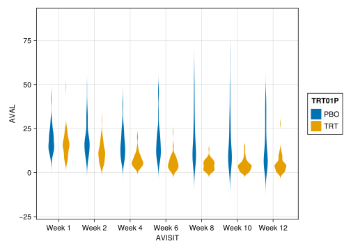
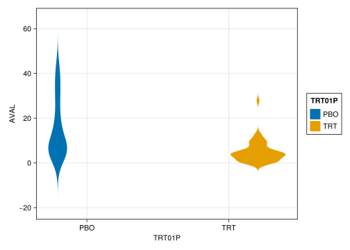

## Load packages
using Turing
using CSV
using DataFrames
using TidierData
using TidierPlots
using CategoricalArrays
using FillArrays
using LinearAlgebra
using AlgebraOfGraphics
using CairoMakie
# Load data from the parent folder
adpasi = CSV.read(joinpath("..","..", "data", "longitudinal.csv"), DataFrame)
# Name datasets and filter for PASI endpoint at Week12
pasi_data = @chain adpasi begin
@filter(TRT01P in ["PBO", "TRT"])
@filter(PARAMCD == "PASITSCO")
@arrange(AVISITN)
end
xmat = @chain pasi_data begin
@filter(AVISIT == "Week 12")
@mutate(TRT01P1 = TRT01P == "TRT")
@select(TRT01P1, TRT01P, BASE, AVAL)
end
# Design matrix
covariate_mat = [
xmat[!, "TRT01P1"] parse.(Float64, xmat[!, "BASE"])
]
# Outcome measurements at week 12
pasi_score_week_12 = xmat[!, "AVAL"]Relearning Turing.jl
The Julia PPL Turing.jl has had some updates. This blog post serves as a very basic introduction on how to work with a Turing.jl model today.
Data
We will use a dataset from a chapter on longitudinal data in the excellent online book on Applied Modelling in Drug Development written by statisticians from Novartis.
The data comes from a fictional longitudinal phase II dermatology study, focused on the PASI score, which measures psoriasis severity. Specifically, we will model the treatment effect compared to placebo on the PASI score at week 12, adjusting for baseline scores. For simplicity, we ignore the longitudinal aspect of the study, as the goal is to demonstrate Bayesian inference using Turing.jl in Julia with real, non-simulated data.
Overview
data(pasi_data) *
visual(Violin) *
mapping(:AVISIT, :AVAL, color = :TRT01P, dodge = :TRT01P) |>
draw
Bayesian linear model
We are going to posit the following model, where \(A\) denotes treatment and \(B\) denotes the baseline PASI score. The specific prior does not concern us.
\[ \begin{align} PASI_i &\sim \mathcal{N}(\alpha + \beta_A A_i + \beta_B B_i, \sigma^2)\\ \sigma &\sim \mathcal{N}_+ (0, 10) \\ \beta_A &\sim \mathcal{N}(0, 10) \\ \beta_B &\sim \mathcal{N}(0, 10)\\ \alpha &\sim \mathcal{N}(0, 10) \end{align} \]
More programatically,
AVAL ~ BASE + TRT01P
Turing.jl model
In turing.jl this becomes
@model function lin_reg(x)
sigma_sq ~ truncated(Normal(0, 10); lower=0)
intercept ~ Normal(0, 10)
nfeatures = size(x, 2)
coefficients ~ MvNormal(Zeros(nfeatures), 10.0 * I)
mu = intercept .+ x * coefficients
y ~ MvNormal(mu, sigma_sq * I)
return mean(y)
endModel object
Now we can define the model unconditional.
model = lin_reg(covariate_mat)With this we can sample from the prior predictive distribution by.
pp_data = rand(model)(sigma_sq = 8.880895462016623, intercept = 5.964668297277171, coefficients = [4.790208082485254, 4.245666876546184], y = [74.04513540646136, 101.27458102814957, 132.68888229258775, 211.40704353079664, 137.62190350166813, 118.53828965304797, 69.31953544214349, 70.7591821362712, 41.25399029253403, 69.10214073234847 … 65.84536155708122, 59.60253492231024, 66.96990878237865, 79.9501697809023, 75.19383195957721, 46.53709018320509, 72.28736095670618, 75.58230948276669, 103.69344810817773, 97.26747767755555])This yiels a named tuple with parameters drawn and data sampled.
We can plot the data envisioned by our prior specification.
xmat.AVAL_PP1 = Main.pp_data.y
data(xmat) *
visual(Violin) *
mapping(:TRT01P, :AVAL, color = :TRT01P, dodge = :TRT01P) |>
draw
We can also fix the parameters at specific values in the model.
params_gen = (sigma_sq = 1, coefficients = [0.1, 0.3], intercept = 1)
model_gen = fix(model, params_gen)
rand(model_gen)(y = [6.976530499993125, 8.13452954400751, 10.364220673161338, 14.776861296830928, 10.92121775710547, 9.1050786608273, 4.653244326028333, 6.068720801978005, 3.727393594887445, 4.983205103637992 … 5.755311203705365, 5.565761027935556, 3.7883041159149924, 7.240744135773525, 7.7280840214119735, 4.6334878851997665, 5.850450919396265, 5.860595518432873, 7.2074272009779925, 6.226379572248134],)If we have observed data, we can posit a conditional model.
model_cond = model | (y = pasi_score_week_12,)DynamicPPL.Model{typeof(lin_reg), (:x,), (), (), Tuple{Matrix{Float64}}, Tuple{}, DynamicPPL.ConditionContext{@NamedTuple{y::Vector{Float64}}, DynamicPPL.DefaultContext}}(lin_reg, (x = [0.0 16.0; 1.0 20.3; … ; 1.0 21.8; 1.0 19.1],), NamedTuple(), ConditionContext((y = [36.7, 2.0, 5.9, 3.8, 0.5, 3.9, 7.7, 6.4, 4.4, 42.6, 10.8, 10.9, 7.8, 0.7, 5.5, 10.8, 5.8, 9.5, 6.2, 0.5, 41.6, 9.9, 17.7, 32.4, 9.1, 0.4, 32.9, 11.4, 4.5, 7.7, 4.2, 2.6, 2.6, 4.5, 7.0, 0.4, 1.2, 37.8, 3.7, 7.3, 3.5, 5.5, 9.5, 5.2, -0.2, 3.1, 7.5, 5.2, 4.8, 10.9, -0.4, 1.0, 4.3, 4.6, 4.5, 0.3, 37.7, 12.3, 3.0, 2.0, 11.5, 8.4, 4.0, 7.7, 4.3, 4.2, 3.8, 2.9, 9.6, 29.6, 5.2, 1.9, 5.1, 12.6, 27.8, 44.1, 5.0, 40.5, 8.4, 14.5, 3.5, 7.8, 23.5, 17.6, 5.7, 27.1, 0.5, 5.6, 4.2, 17.0, 1.6, 18.2, 1.1, 28.0, 4.8, 27.0, -0.2, 16.7, 33.7, 20.4, 0.3, 13.2, 4.9, 5.1, 5.4, 2.7, 3.8, 6.7],), DynamicPPL.DefaultContext()))This can be used to perform inference.
post_inf_chain = sample(model_cond, NUTS(), 1000)┌ Info: Found initial step size
└ ϵ = 0.003125
Sampling: 10%|████▏ | ETA: 0:00:01Sampling: 32%|█████████████▎ | ETA: 0:00:00Sampling: 57%|███████████████████████▍ | ETA: 0:00:00Sampling: 81%|█████████████████████████████████▎ | ETA: 0:00:00Sampling: 100%|█████████████████████████████████████████| Time: 0:00:00Chains MCMC chain (1000×16×1 Array{Float64, 3}):
Iterations = 501:1:1500
Number of chains = 1
Samples per chain = 1000
Wall duration = 2.17 seconds
Compute duration = 2.17 seconds
parameters = sigma_sq, intercept, coefficients[1], coefficients[2]
internals = lp, n_steps, is_accept, acceptance_rate, log_density, hamiltonian_energy, hamiltonian_energy_error, max_hamiltonian_energy_error, tree_depth, numerical_error, step_size, nom_step_size
Summary Statistics
parameters mean std mcse ess_bulk ess_tail rha ⋯
Symbol Float64 Float64 Float64 Float64 Float64 Float6 ⋯
sigma_sq 59.2360 4.8525 0.1597 915.1044 604.0940 1.001 ⋯
intercept 11.7186 2.3287 0.0917 651.3042 450.5228 1.001 ⋯
coefficients[1] -8.5775 1.4643 0.0556 698.8295 503.9592 1.001 ⋯
coefficients[2] 0.1247 0.1058 0.0042 636.7303 419.3296 1.001 ⋯
2 columns omitted
Quantiles
parameters 2.5% 25.0% 50.0% 75.0% 97.5%
Symbol Float64 Float64 Float64 Float64 Float64
sigma_sq 50.4403 55.7015 59.1264 62.3697 68.8865
intercept 7.1308 10.2706 11.7706 13.3252 16.1838
coefficients[1] -11.6011 -9.5900 -8.6022 -7.6930 -5.5709
coefficients[2] -0.0721 0.0494 0.1240 0.1944 0.3426
The samples are collected into an MCMCchain.jl object, which can be used for convergence diagnostics
To obtain posterior predictive samples we call predict on the model using the posterior draws.
predict(model, post_inf_chain)Chains MCMC chain (1000×108×1 Array{Float64, 3}):
Iterations = 1:1:1000
Number of chains = 1
Samples per chain = 1000
parameters = y[1], y[2], y[3], y[4], y[5], y[6], y[7], y[8], y[9], y[10], y[11], y[12], y[13], y[14], y[15], y[16], y[17], y[18], y[19], y[20], y[21], y[22], y[23], y[24], y[25], y[26], y[27], y[28], y[29], y[30], y[31], y[32], y[33], y[34], y[35], y[36], y[37], y[38], y[39], y[40], y[41], y[42], y[43], y[44], y[45], y[46], y[47], y[48], y[49], y[50], y[51], y[52], y[53], y[54], y[55], y[56], y[57], y[58], y[59], y[60], y[61], y[62], y[63], y[64], y[65], y[66], y[67], y[68], y[69], y[70], y[71], y[72], y[73], y[74], y[75], y[76], y[77], y[78], y[79], y[80], y[81], y[82], y[83], y[84], y[85], y[86], y[87], y[88], y[89], y[90], y[91], y[92], y[93], y[94], y[95], y[96], y[97], y[98], y[99], y[100], y[101], y[102], y[103], y[104], y[105], y[106], y[107], y[108]
internals =
Summary Statistics
parameters mean std mcse ess_bulk ess_tail rhat ⋯
Symbol Float64 Float64 Float64 Float64 Float64 Float64 ⋯
y[1] 13.7967 7.8794 0.2610 914.2609 974.8106 1.0017 ⋯
y[2] 5.6106 7.8312 0.2566 937.1523 943.0320 0.9995 ⋯
y[3] 6.3401 7.7117 0.2542 923.5480 771.6962 1.0010 ⋯
y[4] 9.2513 8.0674 0.2547 1000.8023 950.6876 0.9992 ⋯
y[5] 6.6589 7.7463 0.2625 863.4096 810.6858 0.9993 ⋯
y[6] 15.2460 7.6853 0.2446 985.2068 876.9116 0.9991 ⋯
y[7] 13.6571 7.7460 0.2590 892.1789 1025.7469 1.0006 ⋯
y[8] 13.6351 7.6352 0.2311 1091.9113 1069.7315 0.9990 ⋯
y[9] 13.0130 7.8927 0.2539 966.7604 790.3527 0.9992 ⋯
y[10] 13.6725 7.7698 0.2437 1018.8739 939.7273 1.0023 ⋯
y[11] 7.6869 7.5657 0.2402 992.7012 969.5640 0.9992 ⋯
y[12] 4.7701 7.7331 0.2663 856.3448 883.6894 1.0006 ⋯
y[13] 12.8787 7.7338 0.2345 1089.9189 1019.5238 0.9993 ⋯
y[14] 5.9266 7.6453 0.2439 984.2169 969.1194 0.9998 ⋯
y[15] 13.5622 7.6957 0.2509 941.1914 866.8385 0.9992 ⋯
y[16] 15.2267 7.4455 0.2463 917.0354 807.7620 0.9995 ⋯
y[17] 14.2428 7.3924 0.2477 887.2756 908.0965 0.9994 ⋯
y[18] 4.3595 7.5666 0.2514 911.5986 720.2255 0.9995 ⋯
y[19] 14.4912 8.0007 0.2492 1036.4395 936.4889 0.9998 ⋯
y[20] 5.8473 7.4124 0.2353 991.0700 799.1664 1.0003 ⋯
y[21] 14.6888 7.9754 0.2584 952.2049 933.5372 1.0000 ⋯
y[22] 14.5349 7.7054 0.2268 1155.8666 936.2445 1.0058 ⋯
y[23] 13.9577 7.6504 0.2439 983.7411 823.3031 1.0016 ⋯
⋮ ⋮ ⋮ ⋮ ⋮ ⋮ ⋮ ⋱
1 column and 85 rows omitted
Quantiles
parameters 2.5% 25.0% 50.0% 75.0% 97.5%
Symbol Float64 Float64 Float64 Float64 Float64
y[1] -1.6961 8.6353 13.5926 19.2993 29.5047
y[2] -10.1041 0.6058 5.5608 10.8146 20.7665
y[3] -8.5548 1.2689 6.1809 11.4636 21.4489
y[4] -6.5390 3.7574 9.4727 14.6614 25.8147
y[5] -7.9418 1.2013 6.7533 12.1015 21.3070
y[6] 0.4194 10.2021 15.2881 20.3444 30.2739
y[7] -1.3729 8.3496 13.5757 18.8089 28.8479
y[8] -1.9969 8.7091 13.6389 18.7109 28.4166
y[9] -2.6839 7.9027 13.0647 18.2290 28.1126
y[10] -1.4729 8.5916 13.8315 19.0749 28.3138
y[11] -7.9054 2.5633 7.9286 13.1672 21.8840
y[12] -10.4378 -0.6760 4.9097 9.7603 19.7232
y[13] -2.5794 7.7874 12.8149 18.1133 28.4300
y[14] -9.4798 0.9819 5.7050 11.3368 20.6466
y[15] -1.2778 8.3298 13.6570 18.6350 28.7063
y[16] 0.5684 10.4777 14.7051 19.8557 30.8652
y[17] 0.7975 9.0260 14.0066 19.1759 28.9296
y[18] -10.2511 -0.4300 4.2276 9.4544 18.6115
y[19] -0.9257 9.2579 14.1665 19.6109 31.3400
y[20] -8.3581 0.6855 5.6253 10.8331 20.2349
y[21] -1.0536 9.7281 14.6989 19.5195 30.3965
y[22] 0.2045 9.3728 14.5359 19.6813 29.2141
y[23] -0.7155 8.5867 14.0899 19.1400 28.8321
⋮ ⋮ ⋮ ⋮ ⋮ ⋮
85 rows omitted
We can also obtain the generated quantities as in STAN. Here we obtain the results from the return statement within the Turing.jl model.
generated_quantities(model, post_inf_chain)1000×1 Matrix{Float64}:
8.9532631400686
10.635385476425526
10.9379380240477
9.718926441077622
9.238045365105314
9.324013788620892
10.717031529226674
9.648857129732638
8.593184070880993
10.477892655956245
10.67840832888346
11.48710722701937
11.85883954277491
⋮
10.17861085601975
10.549766590644731
11.006550938137957
9.097905236661449
10.645929356659796
10.108717601731522
11.311806462518199
10.227024199029202
12.668065490300764
9.791628312772145
11.36774943548461
10.95783386905061